H-Adapter: Pose-Robust Hairstyle Transfer via Attention-Derived, Source-Aligned Hair Masks
Abstract
Hairstyle transfer has practical applications such as virtual try-on, yet remains challenging when the source and reference exhibit large head-pose discrepancies. We propose H-Adapter, which improves pose robustness by training with a region-specific loss that disentangles hair and non-hair objectives and thereby induces spatially disentangled cross-attention, from which a source-aligned hair edit mask is derived to guide diffusion-based inpainting. Experiments on pose-agnostic and pose-different subsets demonstrate strong quantitative results, including the best FID, FIDCLIP, and CLIP-I under pose differences, while maintaining competitive non-hair preservation and improving qualitative fidelity to fine-grained reference hairstyle details. Beyond source-conditioned transfer, H-Adapter supports practical extensions including text-to-image generation, auxiliary prompt-based hair color control, and compatibility with an identity-preserving IP-Adapter variant. We also introduce a VLM-as-a-judge protocol and observe consistent gains in hairstyle faithfulness, non-hair preservation, and artifact quality.
Method Overview
We train an H-Adapter on top of IP-Adapter with a region-specific loss that disentangles hair and non-hair objectives. At inference, the resulting cross-attention yields a source-aligned coarse hair mask, which guides a two-stage diffusion inpainting pipeline (warm-up → intermediate → pixel-level segmentation) to produce pose- and shape-consistent hairstyle transfer.
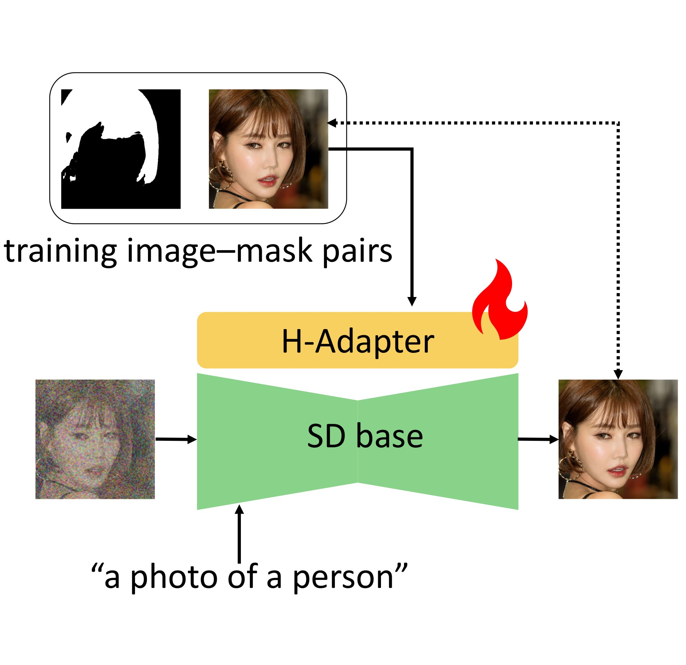
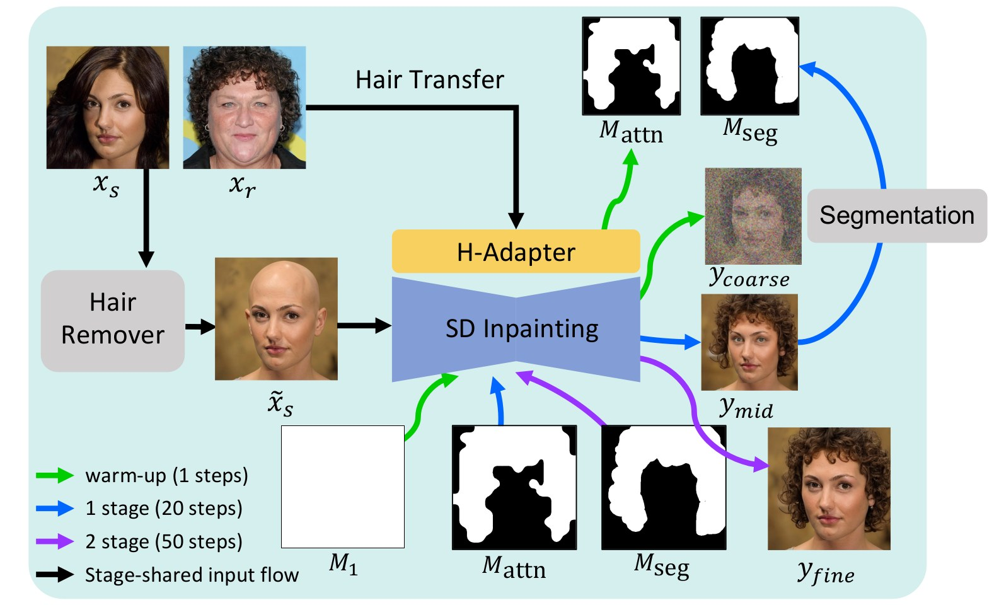
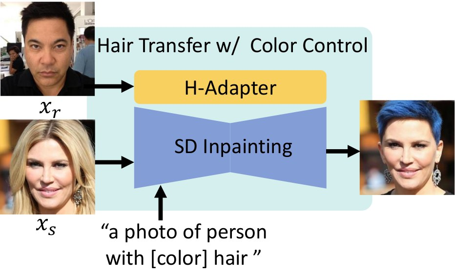
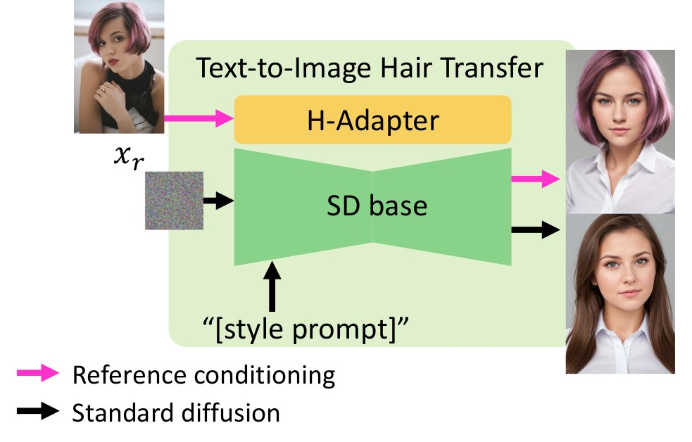
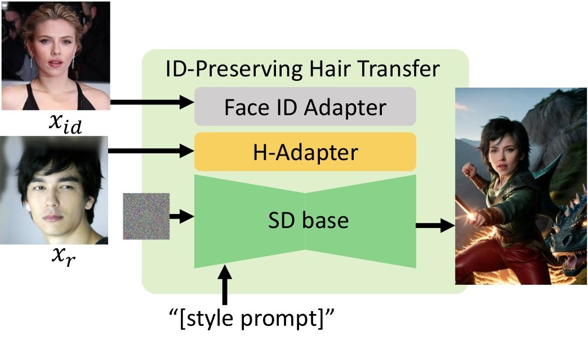
Flexible Usage of H-Adapter
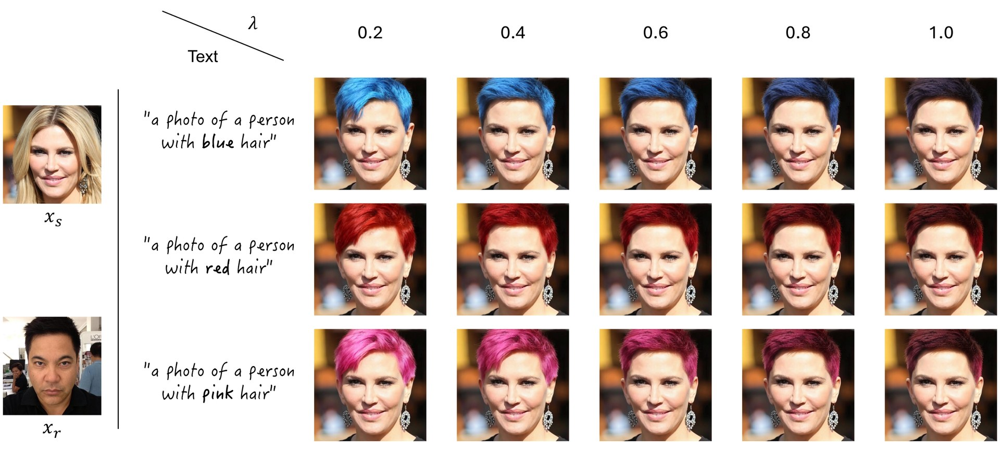
Auxiliary prompt-based hair-color control. Smaller weights improve prompt responsiveness; larger weights strengthen reference faithfulness.
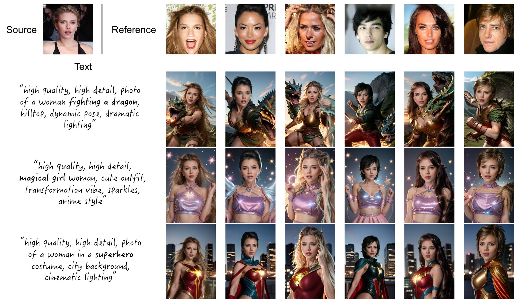
Composition with IP-Adapter FaceID Plus enables identity-consistent hairstyle transfer across diverse text prompts and reference hairstyles.
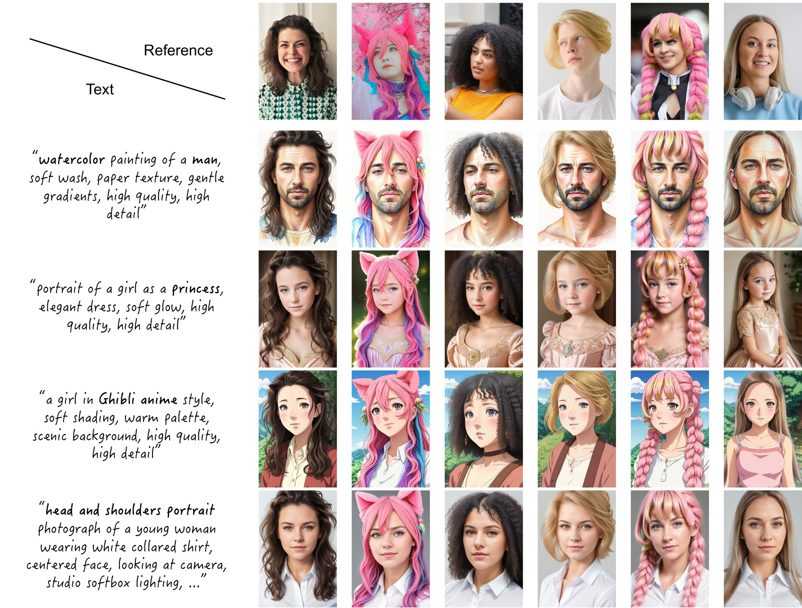
Reference-guided text-to-image generation: the learned hair-conditioning branch composes with standard text prompts without retraining.
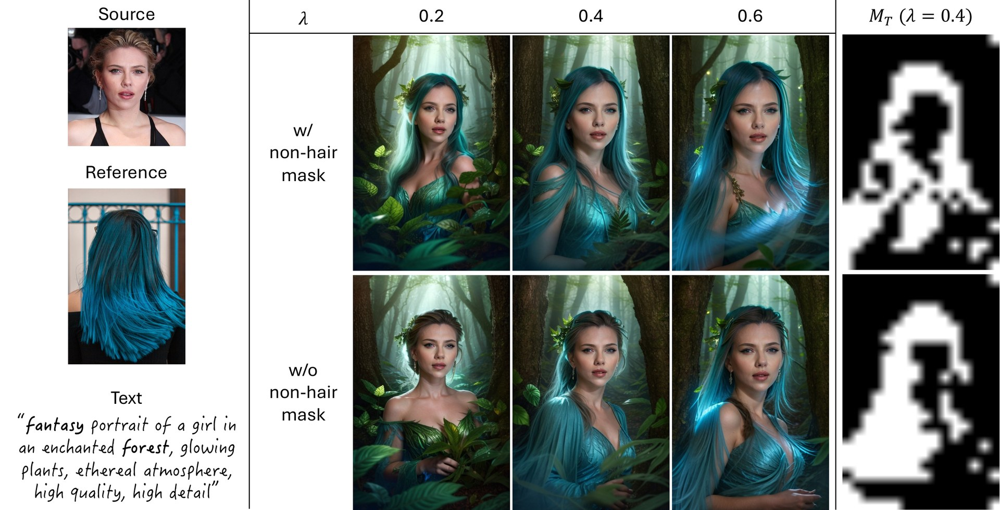
Additional FaceID Plus compositions showcasing identity-consistent hairstyle transfer.
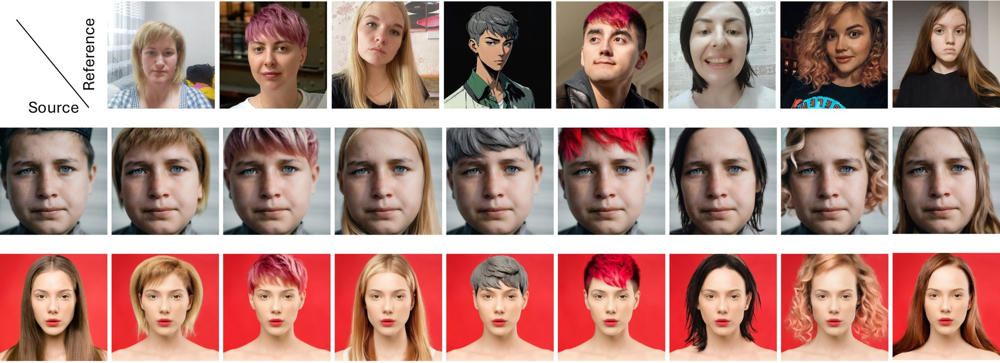
In-the-wild qualitative results across unconstrained source images.
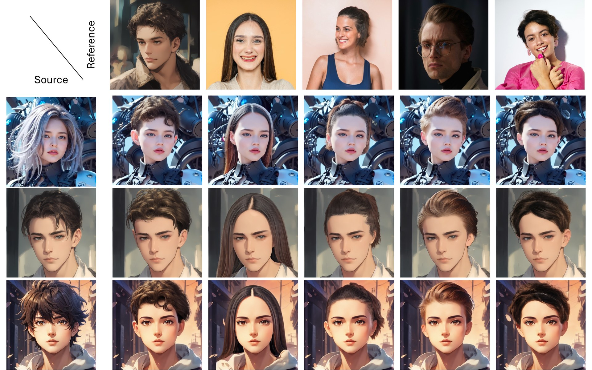
Stylized and cross-domain inputs: H-Adapter generalizes beyond photorealistic portraits.
BibTeX
@inproceedings{jeong2026hadapter,
title = {H-Adapter: Pose-Robust Hairstyle Transfer via Attention-Derived, Source-Aligned Hair Masks},
author = {Jeong, Seulgi and Cho, Yunseong and Park, Sanghun},
booktitle = {Proceedings of the European Conference on Computer Vision (ECCV)},
year = {2026}
}